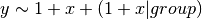

GLMs¶
cumulative_logistic¶
-
class
diamond.glms.cumulative_logistic.CumulativeLogisticRegression(train_df, priors_df, copy=False, test_df=None)[source]¶ Bases:
diamond.glms.glm.GLMCumulative logistic regression model with arbitrary crossed random effects and known covariances
-
fit(formula, **kwargs)[source]¶ Fit the model specified by formula and training data
Parameters: formula (string) – R-style formula expressing the model to fit. eg. 
Keyword Arguments: - intercepts – array-like, optional. Initial values for intercepts. Must be monotonically increasing and have length == number of response levels minus one
- main – array-like, optional. Initial values for main effects. Must have length == number of main effects specified in formula
- kwargs – additional arguments passed to solver.fit
Returns: dict of parameter estimates with keys “intercepts”, “main”, and one key for each grouping factor
-
initialize(formula, **kwargs)[source]¶ Get ready to fit the model by parsing the formula, checking priors, and creating design, penalty, and Hessian matrices
Parameters: formula (string) – R-style formula expressing the model to fit. eg. Keyword Arguments: kwargs – additional arguments to pass to solver.fit method
-
predict(new_df)[source]¶ Use the estimated model to make predictions. New levels of grouping factors are given fixed effects, with zero random effects
Parameters: new_df (DataFrame) – data to make predictions on Returns: n x J matrix, where n is the number of rows of new_df and J is the number of possible response values. The (i, j) entry of this matrix is the probability that observation i realizes response level j.
-
glm¶
-
class
diamond.glms.glm.GLM(train_df, priors_df, copy=False, test_df=None)[source]¶ Bases:
objectBinary or cumulative logistic regression model with arbitrary crossed random effects and known covariance
Initialize a diamond model
Parameters: - train_df (DataFrame) – DataFrame to estimate the model parameters with
- priors_df (DataFrame) – Covariance matrix to use for regularization. Format is | group | var1 | var2 | vcov | where group represents the grouping factor, var1 and var2 specify the row and column of the covariance matrix, and vcov is a scalar for that entry of the covariance matrix. Note that if var2 is NULL, vcov is interpreted as the diagonal element of the covariance matrix for var1
- copy (boolean) – Make a copy of train_df. If False, new columns will be created and the index will be reset.
- test_df (DataFrame) – This is used to make predictions.
Returns: Object (GLM)
-
initialize(formula, **kwargs)[source]¶ Get ready to fit the model by parsing the formula, checking priors, and creating design, penalty, and Hessian matrices
Parameters: formula (string) – R-style formula expressing the model to fit. eg. Keyword Arguments: kwargs – additional arguments to pass to fit method
-
predict(new_df)[source]¶ Obtain predictions from a fitted diamond object. New levels of grouping factors are given fixed effects, with zero random effects
Parameters: new_df (DataFrame) – data to make predictions on Returns: predictions, whose length is equal to the number of rows of the supplied DataFrame Return type: array_like
logistic¶
-
class
diamond.glms.logistic.LogisticRegression(train_df, priors_df, copy=False, test_df=None)[source]¶ Bases:
diamond.glms.glm.GLMLogistic regression model with arbitrary crossed random effects and known covariances
-
fit(formula, **kwargs)[source]¶ Fit the model specified by formula and training data
Parameters: formula (string) – R-style formula expressing the model to fit. eg. Keyword Arguments: kwargs – additional arguments passed to solver Returns: dict of estimated parameters
-